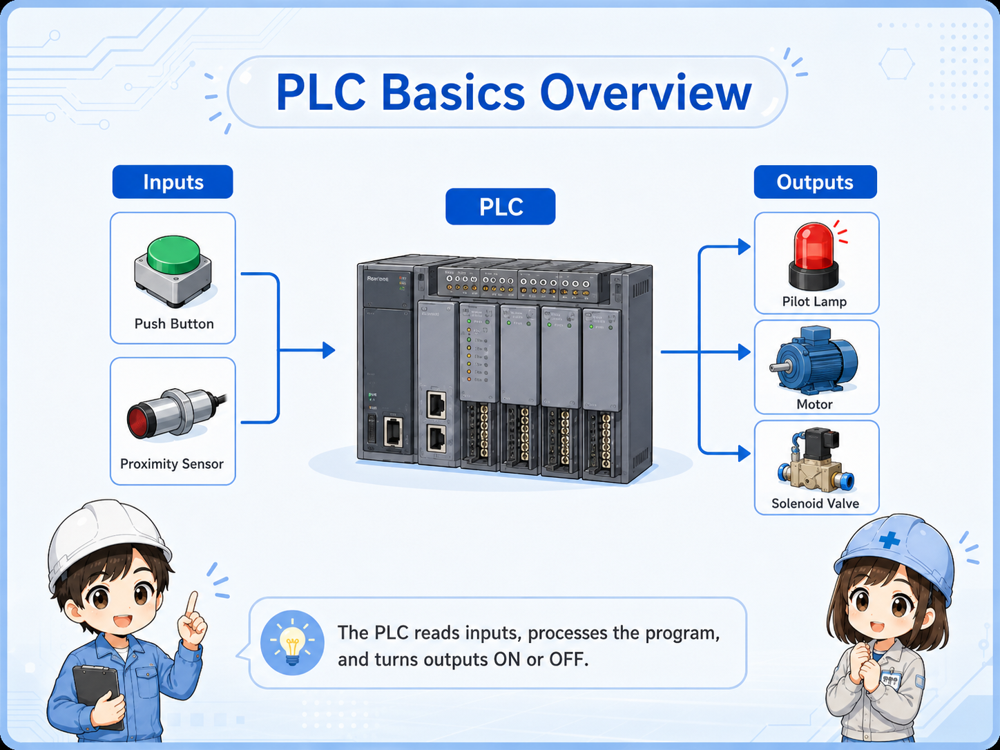
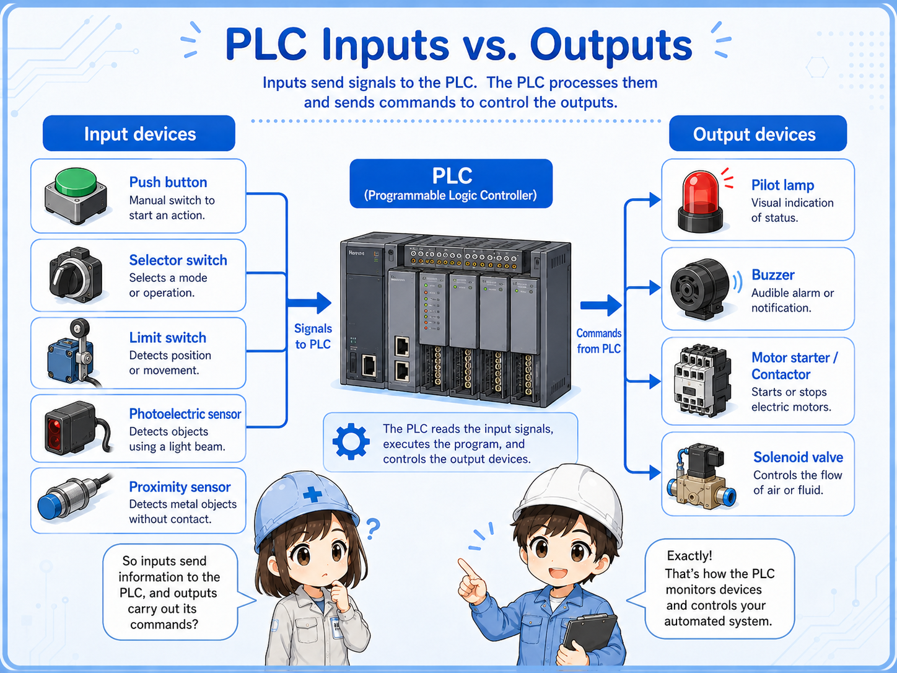
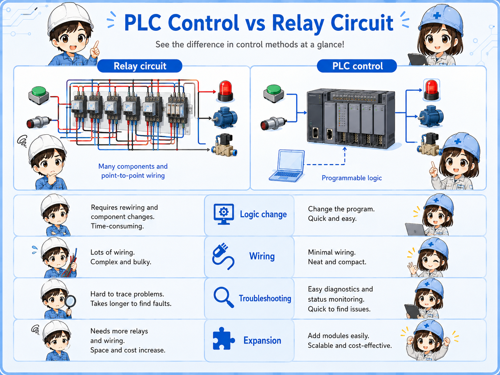
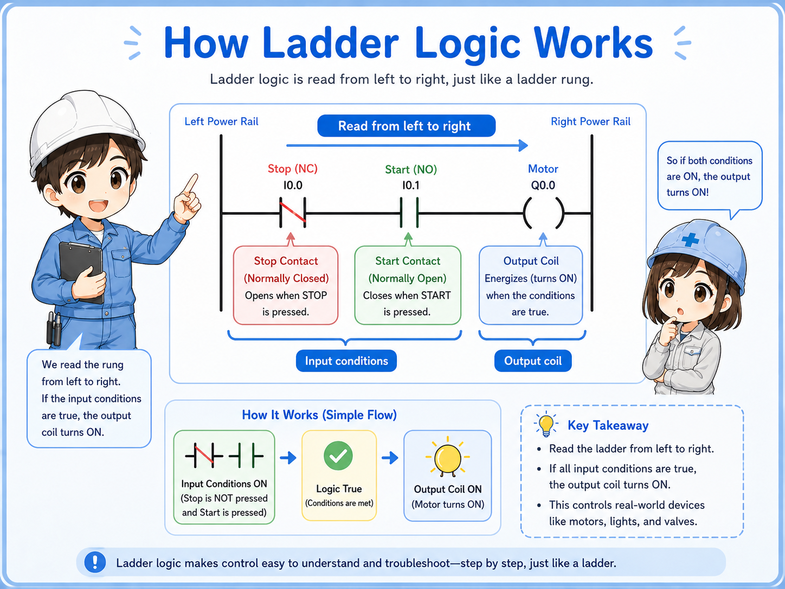

Good fit for
- Electricians starting to learn control systems
- People who hear “PLC” on site but are not sure what it does
- Beginners preparing to read ladder logic
A PLC is the controller that reads field signals and turns outputs on and off. This guide explains the basic idea before you start looking at ladder logic or GX Works3.
PLC stands for Programmable Logic Controller.
A PLC is a controller used in machines and electrical control panels. It checks signals from sensors, switches, push buttons, and other devices, then controls outputs such as lamps, relays, solenoid valves, motors, and alarms.
For a beginner, the easiest way to understand a PLC is not to start with complicated software. Start with this simple flow:
The PLC receives a signal from a switch, sensor, or device.
The program checks conditions such as input status, timer completion, and interlock conditions.
The PLC turns an output on or off to control a field device.


So a PLC is not the machine itself, but the controller that decides what the machine should do?

Exactly. Think of it as the part that watches signals and gives commands according to the program.
Most beginner confusion becomes easier once you separate inputs and outputs.
An input is information coming into the PLC. An output is a command going out from the PLC.
| Type | Simple meaning | Examples | Beginner checkpoint |
|---|---|---|---|
| Input | A signal the PLC reads | Push button, limit switch, photoelectric sensor, pressure switch | Is the signal really reaching the PLC input? |
| Output | A command the PLC sends | Pilot lamp, relay coil, solenoid valve, buzzer, motor control signal | Is the PLC output on, and is the output device powered correctly? |

When a machine does not move, do not jump straight to “the PLC is broken.” First check whether the input condition is present and whether the output side has power and a valid command.
A PLC can replace many relay-circuit decisions with a program.
Before PLCs became common, many control circuits were built with physical relays, timers, and wiring. Those circuits can still be very useful, but changing the logic often means changing wiring.
With a PLC, many of those decisions are written as a program. Inputs and outputs are still real wires, but the decision part can be changed in software.
| Point | Relay circuit | PLC control |
|---|---|---|
| Decision logic | Made with relay contacts, wiring, and devices | Made with a program inside the PLC |
| Change method | Often requires wiring changes | Often changed by editing the program |
| Field troubleshooting | Trace voltage and contacts physically | Check field wiring plus input/output status and program conditions |

Ladder logic is a way to write PLC decisions so electricians can read them like a control circuit.
Ladder logic uses contact-like symbols and coil-like symbols. This makes it easier for people familiar with relay circuits to understand PLC programs.
A very simple ladder idea is:
In actual PLC software, there can be timers, counters, interlocks, data instructions, alarms, and many other functions. But the first step is still to read the rung from left to right and ask: “What conditions are required before this output turns on?”

PLC troubleshooting is not only software. Many problems are still wiring, power, sensor, or output-device problems.
Check whether the PLC input actually turns on when the switch or sensor operates.
Check whether the PLC output command is on and whether the output device has the correct power.
Safety, error, manual/auto, and home-position conditions may prevent operation even when the main command looks correct.
Loose terminals, wrong common wiring, blown fuses, and missing 24 VDC can make a good program look wrong.
Actual terminal names, wiring methods, voltage ratings, input types, and output specifications depend on the PLC model and I/O unit. Always check the official manual for the exact unit you are using before wiring or troubleshooting.
Software becomes easier when the hardware flow is already clear.
GX Works3 is used for Mitsubishi PLC programming and maintenance, but beginners should not start by memorizing menus. First, understand what the program is trying to control.
Start from the output you care about, then trace backward through the conditions that allow it to turn on. This is often easier than reading the whole program from the top.